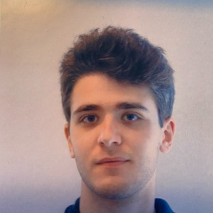
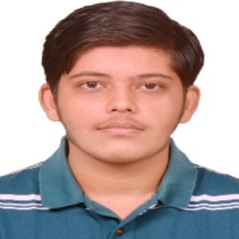
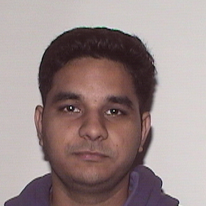

General
Instructor
Email: matthias@ccs.neu.edu |
Office Hours: Wednesday, 04:00pm |
Location: WV H 308B (inside the lab) |
Teaching Assistants
Luc Ferrara, head TA

TH 2:00pmTUE 2:00pm
Akhil Tulluri

FR 11:00amTUE 03:30pm
Sunny Yadav

THR 3:00pm
The teaching assistants will hold office hours in front of WV H 308.
Time and Location
Days
Time
Location
Section TA
MWTh
09:15am
Ryder Hall 433
Akhil Tulluri
MWTh
10:30am
Ryder Hall 159
Sunny Yadav
Contract If you wish to earn a grade in this course, you must pick a partner with whom you will pair-program on all homework assignments.
Subject: CS 4400 |
|
Partner 1: last name, first name; last four digits of the partner's NU id |
Partner 2: last name, first name; last four digits of the partner's NU id |
|
the chosen programming language for the semester |
|
email addresses where both of you can be reached every day |
In response you will receive an email with a link to your Northeastern GitHub account, which is your only means to turn in homework solutions.
Organization The course is a mix of a a traditional lecture course with a studio course.
Every pair will be asked to code-walk several of the weekly assignments in front of the class. They will receive a notification that they must code walk at least one hour before class, possibly twelve hours. A code walk will typically last around 15 minutes.
The instructor, TAs, and peers in class will question design decisions and expose bugs. Students are welcome to take note and fix the same or similar bugs in their own code base. Extra points go to students who expose bugs in their peers’ solutions.
Homework You must pair-program with your partner to solve the (approximately) weekly homework assignments. Failure to pair-program will affect your final grade.
You must use the language you have chosen at the beginning of the semester. The
programming language must exist as-is on the College’s Linux boxes; see
—
A typical weekly assignment will consist of two tasks: a programming task and a testing task. Every week the head TA will run every pair’s tests against the instructor’s solution, and every pair’s solution against all those tests that survive the instructors “oracle.” These tests will be run on a Linux box with a configuration like the College’s.
Most weekly assignments build on the existing code base. Some request that you revise existing code; others merely require the addition of an orthogonal piece of functionality. Hence, continuously eliminating bugs as found by the test fest or as exposed during code presentations (possibly by others) is a good idea (tm).
Grades The final grading scale depends on students’ behavior during the semester. The goal is to run this course for adults who are enrolled because they have a deep, burning desire to learn. They respect a basic honor code, which includes neither cheating nor helping others in an inappropriate manner.
#lang typed/racket (define (% {x : Real}) (/ x 100)) (define TEST-FEST (% 79)) (define PRESENTATION (% 20))
If these assumptions are violated at any point during the semester, I will give a final exam. Each student will get 30 minutes to explain an instructor-chosen fragment of their code base. This final exam will contribute at least 50% of the overall grade.